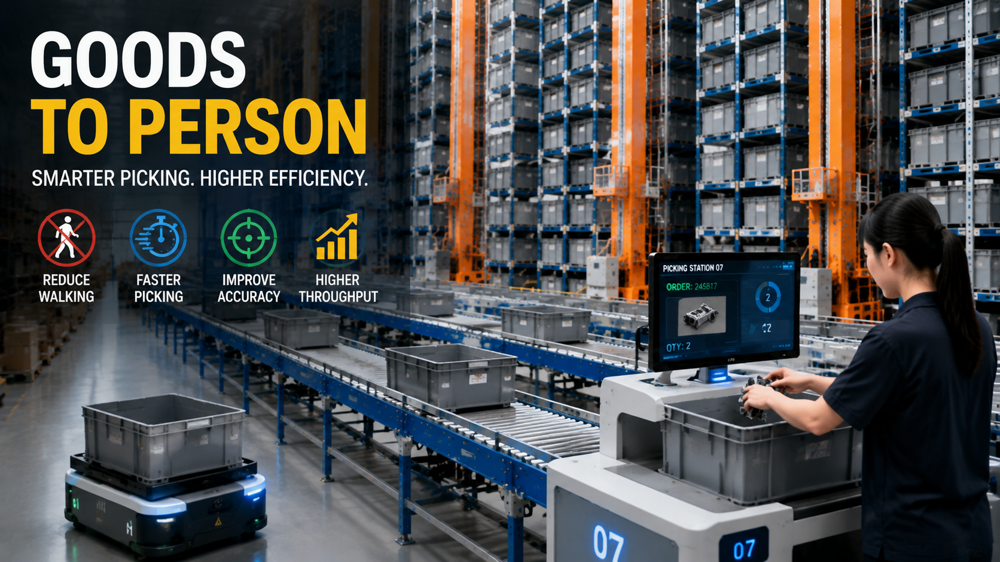

Goods-to-Person Picking System Explained: How Automated Warehouses Improve Order Efficiency

Summary
How Goods-to-Person Technology Transforms Warehouse Picking Operations
In traditional warehouses, workers usually need to walk through storage areas to find and collect products.
This operation model is known as:
Person-to-goods picking
The worker moves to the inventory location.
However, as warehouses become larger and SKU numbers increase, this traditional picking method creates several challenges:
Long walking distances
Low picking efficiency
Higher labor requirements
Increased operation complexity
A goods-to-person picking system changes the warehouse workflow completely.
Instead of workers searching for products, the automated warehouse delivers required goods directly to operators.
The process becomes:
Goods move to people
This automation approach helps companies improve:
Order processing speed
Picking accuracy
Warehouse productivity
High-frequency order handling capability
Goods-to-person picking systems are widely used in:
E-commerce fulfillment centers
Retail distribution warehouses
Spare parts storage facilities
High SKU inventory environments
Technology
- Goods-to-Person Picking System Technology
- Goods-to-person picking is an important technology used in modern automated warehouses.
- The core concept is simple:
- Traditional warehouse:
- Person walks to goods
- ↓
- Search storage location
- ↓
- Pick products manually
- ↓
- Complete order
- Automated warehouse:
- Order received
- ↓
- System identifies inventory
- ↓
- Automated equipment retrieves goods
- ↓
- Goods move to picking station
- ↓
- Operator completes picking
- The operator no longer spends time walking between storage locations.
- Instead
- automation systems handle product movement.
- A complete goods-to-person picking system may include:
- Mini Load ASRS
- Automated storage racks
- Stacker cranes
- Conveyor systems
- Picking stations
- Warehouse management software
Challenge
Why Traditional Picking Methods Cannot Meet Modern Warehouse Requirements
Traditional warehouse picking has been widely used for many years.
For small warehouses with limited products, manual picking can still be effective.
However, when businesses grow and face:
Thousands of SKUs
Higher order volumes
Faster delivery expectations
More complex inventory management
traditional picking methods become increasingly difficult to maintain.
Challenge 1: Long Walking Distance
In traditional warehouses, operators need to move between storage locations.
A typical process includes:
Receive order
↓
Find product location
↓
Walk through warehouse
↓
Pick product
↓
Return to packing area
For large warehouses, employees may spend a significant amount of time walking instead of performing productive picking activities.
Challenge 2: Low Picking Efficiency
Manual searching creates unnecessary operation time.
The efficiency depends heavily on:
Worker experience
Warehouse layout
Product location knowledge
As order volume increases, companies need more employees to maintain performance.
Challenge 3: High Labor Dependency
Traditional picking requires more workers during peak seasons.
Companies often face:
Recruitment challenges
Training costs
Labor fluctuations
This makes warehouse operation less predictable.
Challenge 4: Picking Accuracy Problems
Manual operations may create:
Wrong product selection
Inventory mistakes
Order errors
For e-commerce and retail businesses, picking accuracy directly affects customer satisfaction.
Solution
How Goods-to-Person Picking Improves Warehouse Performance
Goods-to-person picking changes the traditional warehouse operation model.
The key idea is:
Workers stay at picking stations while products move automatically.
This creates a more efficient workflow.
Reduce Walking Distance
The biggest improvement comes from eliminating unnecessary movement.
Instead of:
Worker → Storage Location
The system changes to:
Storage System → Picking Station → Worker
This allows operators to focus on picking tasks rather than searching for products.
Increase Picking Speed
Automated systems can quickly retrieve required inventory.
Benefits include:
Faster order processing
Higher picking frequency
Better warehouse throughput
This is especially important for:
Online retail
E-commerce fulfillment
Distribution centers
Improve Picking Accuracy
Goods-to-person systems work with digital warehouse management platforms.
The system can provide:
Product information
Picking instructions
Inventory tracking
This reduces human mistakes during order processing.
Support High-Frequency Orders
Modern businesses often require:
Smaller order quantities
More frequent shipments
Faster delivery
Goods-to-person picking systems are designed for these high-frequency operations.
Workflow & Layout
Complete Goods-to-Person Picking Process
A typical automated picking workflow includes:
Step 1: Customer Order Received
The warehouse management system receives customer orders.
Information includes:
Product requirements
Quantity
Priority
↓
Step 2: System Identifies Inventory
The warehouse system determines:
Product location
Retrieval sequence
Picking strategy
↓
Step 3: Automated Retrieval
The automated storage system retrieves required products.
Equipment may include:
Mini Load ASRS
Stacker cranes
Conveyors
↓
Step 4: Goods Move to Picking Station
The required bins or containers are transported automatically.
Products arrive at the operator.
↓
Step 5: Operator Completes Picking
The worker removes required items according to system instructions.
↓
Step 6: Sorting and Shipping
Completed orders move to:
Sorting area
Packaging area
Shipping area
Results & ROI
- Business Benefits of Goods-to-Person Picking Automation
- A goods-to-person picking system creates value beyond simple labor reduction.
- The main benefits include:
- Higher Warehouse Productivity
- Operators spend more time performing picking tasks instead of walking.
- This improves overall warehouse output.
- Faster Order Fulfillment
- Automated retrieval reduces processing time.
- Companies can respond faster to customer orders.
- Better Space Utilization
- Goods-to-person systems usually work together with high-density automated storage.
- This improves warehouse space efficiency.
- Reduced Labor Pressure
- Automation reduces dependence on repetitive manual movement.
- Companies can manage increasing workloads more efficiently.
- Improved Customer Experience
- Faster and more accurate order processing helps improve delivery performance.
Equipment List
- Main Components of Goods-to-Person Picking System
- A complete automated picking solution may include:
- Mini Load ASRS
- Functions:
- Automated bin storage
- Fast product retrieval
- High-density inventory management
- Stacker Crane System
- Functions:
- Automatic storage operation
- Precise bin movement
- High-speed retrieval
- Conveyor System
- Functions:
- Automated transportation
- Connecting storage and picking areas
- Picking Station
- Functions:
- Operator-product interaction
- Efficient order processing
- Sorting System
- Functions:
- Order classification
- Shipment preparation
- WMS/WCS Software
- Functions:
- Inventory control
- Task management
- Equipment coordination
Project Overview / Opening
Why Modern Warehouses Are Moving Toward Goods-to-Person Picking
The growth of e-commerce and global supply chains has changed warehouse requirements.
Customers expect:
Faster delivery
Higher order accuracy
More product choices
Traditional warehouses depend heavily on manual movement.
However, high SKU warehouses require a more efficient approach.
Goods-to-person picking provides a new operation model where:
Automation handles product movement
Workers focus on picking decisions
Software manages inventory flow
This creates a more efficient and scalable warehouse operation.
Key Points
- Why Companies Choose Goods-to-Person Picking Systems
- The Core Difference Is Movement Optimization
- Traditional warehouses move people to products.
- Automated warehouses move products to people.
- This simple change creates major efficiency improvements.
- Walking Time Becomes Productive Time
- Reducing unnecessary movement allows operators to handle more orders.
- Automation Supports High SKU Environments
- The more products a warehouse manages, the greater the benefit of automated picking.
- Digital Control Improves Accuracy
- Software integration provides better inventory visibility and operation management.
- The Goal Is Business Efficiency, Not Only Labor Reduction
- Successful automation improves:
- Speed
- Accuracy
- Scalability
- Operational stability
Implementation / Workflow
How to Implement a Goods-to-Person Picking System
A successful automation project usually follows several stages.
Step 1: Analyze Warehouse Requirements
Evaluate:
SKU quantity
Order frequency
Picking requirements
Storage capacity
Step 2: Design Warehouse Layout
Develop:
Storage configuration
Picking station locations
Material flow design
Step 3: Select Automation Technology
Determine:
ASRS type
Conveyor system
Software platform
Picking method
Step 4: Integrate Warehouse Systems
Connect:
Storage equipment
Picking stations
Warehouse software
Step 5: Test and Optimize
Complete:
System commissioning
Performance testing
Operation adjustment
Customer Value / Results
Creating More Efficient Warehouse Operations
By adopting goods-to-person picking automation, companies can achieve:
Improved Picking Efficiency
Employees handle more orders within the same working time.
Reduced Warehouse Complexity
Automated workflows simplify daily operations.
Better Inventory Management
Digital systems improve visibility and control.
Stronger Fulfillment Capability
Businesses can support higher order volumes and faster delivery requirements.
Competitive Advantage
Efficient warehouse operations help companies respond better to market changes.
Conclusion / Next Step
From Manual Picking to Intelligent Warehouse Automation
For warehouses with increasing SKU numbers and order frequency, traditional picking methods become difficult to scale.
Goods-to-person picking systems provide a practical solution by changing the warehouse operation model:
From:
Person walks to goods
To:
Goods move to person
This transformation improves:
Picking efficiency
Warehouse productivity
Inventory accuracy
Business scalability
13ASRS helps global companies design and implement automated warehouse solutions through China's manufacturing ecosystem.
Our team supports:
Warehouse planning
ASRS solution design
Equipment integration
Project delivery
If you are planning an automated picking system for e-commerce, retail, or spare parts storage, contact us for a customized warehouse automation solution.
SEO Title
Goods-to-Person Picking System Explained: How Automated Warehouses Improve Order Efficiency
SEO Description
How Goods-to-Person Technology Transforms Warehouse Picking Operations
In traditional warehouses, workers usually need to walk through storage areas to find and collect products.
This operation model is known as:
Person-to-goods picking
The worker moves to the inventory location.
However, as warehouses become larger and SKU numbers increase, this traditional picking method creates several challenges:
Long walking distances
Low picking efficiency
Higher labor requirements
Increased operation complexity
A goods-to-person picking system changes the warehouse workflow completely.
Instead of workers searching for products, the automated warehouse delivers required goods directly to operators.
The process becomes:
Goods move to people
This automation approach helps companies improve:
Order processing speed
Picking accuracy
Warehouse productivity
High-frequency order handling capability
Goods-to-person picking systems are widely used in:
E-commerce fulfillment centers
Retail distribution warehouses
Spare parts storage facilities
High SKU inventory environments
Related Blog
Start with Your Business Challenge
Tell us about your warehouse, factory, or production requirements. We'll help you explore practical automation solutions and relevant project references.